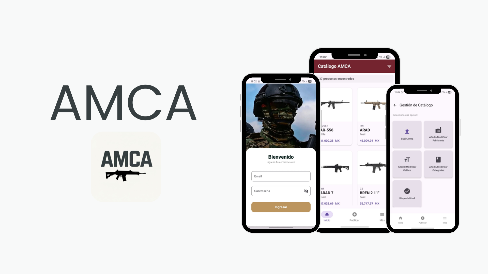
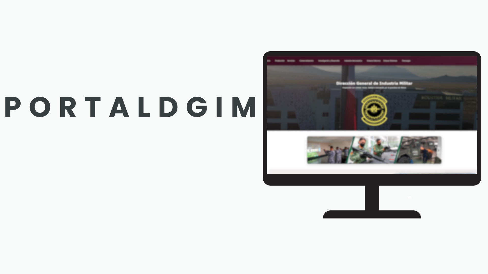
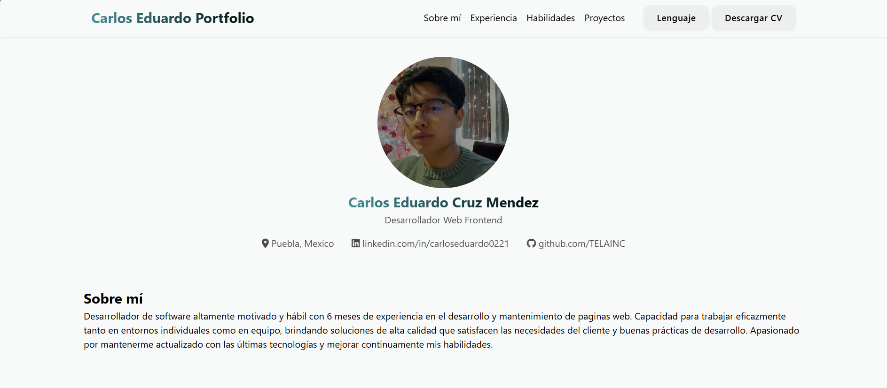

Carlos Eduardo Cruz Méndez
Desarrollador Frontend
Sobre mí
Soy un desarrollador con 6 meses de experiencia en el desarrollo y mantenimiento de páginas web. Capacidad para trabajar eficazmente tanto en entornos individuales como en equipo, brindando soluciones de alta calidad que satisfacen las necesidades del cliente y aplicando buenas prácticas de desarrollo. Apasionado por mantenerme actualizado con las últimas tecnologías y mejorar continuamente mis habilidades.
Experiencia
Desarrollador React
Septiembre 2025 - Actualidad
Sistema de Gestión Interno del Municipio de Ocotepec
Implementé diseño responsivo asegurando compatibilidad y correcta visualización en distintos dispositivos. Desarrollé componentes dinámicos como modales y tablas interconectadas, integrando información proveniente de múltiples módulos. Optimicé flujos de usuario y validaciones de sesión, corrigiendo inconsistencias en procesos de autenticación y navegación.
Habilidades
JavaScript
React
Kotlin
HTML
CSS
PostgreSQL
Node.js
WordPress
PHP
Proyectos
Proyecto de residencia
AMCA
Desarrollé de forma integral una aplicación móvil para la Dirección General de Industria Militar bajo arquitectura cliente-servidor de cuatro capas, implementando el frontend en Kotlin (Android) y el backend en Node.js con Express.js. Diseñé y consumí API REST, gestionando la comunicación entre la aplicación móvil y el servidor. Implementé autenticación y autorización mediante JSON Web Tokens (JWT), asegurando control de sesiones y protección de rutas. Modelé y administré la base de datos en PostgreSQL, diseñando la estructura relacional y optimizando consultas. Apliqué principios de arquitectura modular, separación de responsabilidades y manejo estructurado de datos. Realicé pruebas funcionales, validación de flujos críticos y optimización de rendimiento tanto en frontend como en backend.

Proyecto de residencia
PortalDGIM
Diseñé, investigué y lideré el desarrollo integral de PortalDGIM para la Dirección General de Industria Militar, una plataforma web informativa estructurada en más de 20 módulos funcionales, orientada a centralizar y presentar información institucional de manera clara y estructurada. Me encargué de la arquitectura de la interfaz de usuario (UI), aplicando principios de diseño para garantizar una experiencia óptima en escritorio. Implementé animaciones dinámicas y componentes interactivos utilizando HTML5, CSS3 y JavaScript, optimizando el comportamiento visual y la navegación del sistema. Asimismo, gestioné el despliegue y configuración del entorno productivo en Internet Information Services (IIS), asegurando la correcta publicación, estabilidad y disponibilidad del sitio web en el servidor.

Proyecto personal
Portafolio Web
Construí una web personal para presentar mi experiencia al detalle, incluyendo mi CV descargable.
